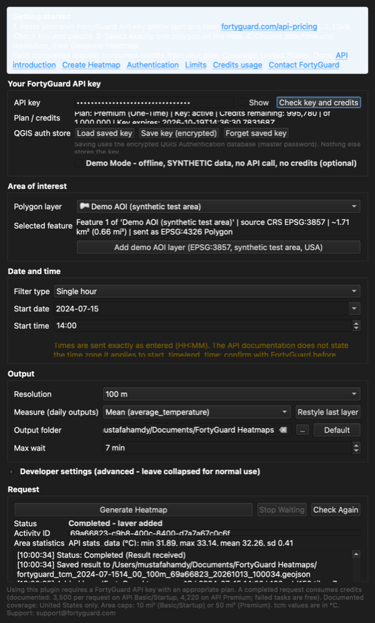
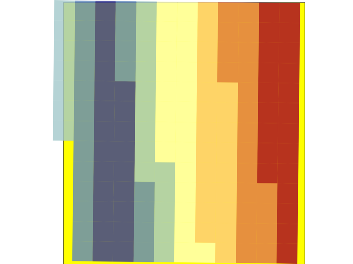

The FortyGuard Temperature Intelligence Layer plugin adds FortyGuard temperature heatmaps to your own QGIS projects. Select an area, pick a date, and get a styled layer with tile temperatures in °C.
FortyGuard Temperature Intelligence Layer is listed in the official QGIS Plugin Repository. The ZIP download above is the same package, for offline installs.

The plugin works with your own FortyGuard API key. Get one on the FortyGuard API plans page. The key is sent only to the FortyGuard API, is kept in memory while QGIS runs, and can optionally be saved in the encrypted QGIS authentication database. Every completed heatmap request consumes credits from your plan (documented: 3,500 credits on API Basic/Startup, 4,220 on API Premium; rejected and failed tasks are free, a completed job with no tiles is charged). Coverage is documented as the United States, and data for the most recent days (about one week) is usually not available yet. The plugin checks the area, the dates and duplicate requests before it submits anything that costs credits.

Documents/FortyGuard Heatmaps and added as a styled vector layer.| Platform | QGIS | Status |
|---|---|---|
| macOS 26 / 27 (Apple Silicon) | 3.44.15 LTR (Qt 5.15, Python 3.12) | Tested, including real API requests |
| Windows 11 | 3.44 | Tested by the FortyGuard team (real API requests) |
| Ubuntu Linux | 3.40.15 | Tested by the FortyGuard team (real API requests) |
| Any | QGIS 4 (Qt 6) | Not supported yet |
Please report problems with the QGIS version, operating system and the text from the plugin's log panel (never include your API key).
support@fortyguard.com · Contact FortyGuard